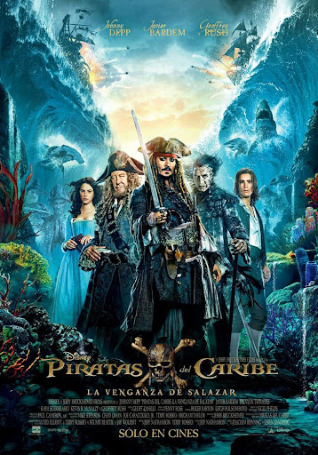

PIRATAS DEL CARIBE

Piratas del Caribe (en inglés, Pirates of the Caribbean) es el título de una franquicia cinematográfica de aventura fantástica y piratas, producida por Jerry Bruckheimer y basada en la atracción del mismo nombre del Parque Temático de Walt Disney. La saga Piratas del Caribe cuenta con cinco películas estrenadas y una sexta en producción.
Los directores de las películas han sido: Gore Verbinski, Rob Marshall, y Joachim Rønning y Espen Sandberg. La saga fue escrita especialmente por Ted Elliott y Terry Rossio, además de otros escritores tales como Stuart Beattie, Jay Wolpert y Jeff Nathanson.
Las historias siguen las aventuras del Capitán Jack Sparrow (Johnny Depp), Will Turner (Orlando Bloom) y Elizabeth Swann (Keira Knightley). Los personajes Héctor Barbossa (Geoffrey Rush) y Joshamee Gibbs (Kevin McNally) siguen a Jack, Will y Elizabeth en el transcurso de las películas. La cuarta película cuenta con Philip Swift (Sam Claflin) y Syrena (Àstrid Bergès-Frisbey), mientras que la quinta película cuenta con Henry Turner (Brenton Thwaites) y Carina Smyth (Kaya Scodelario).
Esta saga de películas se basa libremente en mitos y leyendas de los mares, como el pirata Davy Jones y su tripulación fantasmal a bordo de El holandés errante, la mitología griega que incluye dioses como Poseidón, la ninfa Calipso, seres como el Kraken y las sirenas, brujería y la vida de los piratas de la época. Retrata libremente al Imperio británico, la Compañía de las Indias Orientales, el Imperio español y su relación con los piratas y corsarios.
La serie comenzó con su primer lanzamiento en la pantalla grande en 2003 con Pirates of the Caribbean: The Curse of the Black Pearl, que recibió críticas positivas de los críticos y recaudó 654 millones de dólares en todo el mundo, convirtiéndose en un éxito total. Después de la primera película, Walt Disney Pictures reveló que preparaba una trilogía. La segunda película de la franquicia, bajo el título de Pirates of the Caribbean: Dead Man's Chest, fue lanzada tres años después. La secuela resultó exitosa, rompiendo récords de taquilla en todo el mundo el día de su estreno. El cofre del hombre muerto, como fue llamada en español, terminó siendo la película más taquillera de 2006, tras ganar casi 1.100 millones de dólares a nivel mundial. La tercera película de la serie, con el subtítulo En el fin del mundo, siguió en 2007 rompiendo récords el día de su estreno. Disney lanzó una cuarta película, Pirates of the Caribbean: On Stranger Tides, en 2011 en 2D convencional, Digital 3-D e IMAX 3D. On Stranger Tides logró también recaudar más de mil millones de dólares, convirtiéndose en la segunda película de la franquicia en lograrlo y sólo la octava película en la historia en lograr este récord. En 2015 Disney inició la filmación de la quinta parte de la franquicia, la cual se estrenó en 2017 bajo el título de Piratas del Caribe: La venganza de Salazar, teniendo como fecha de estreno mundial el 26 de mayo.